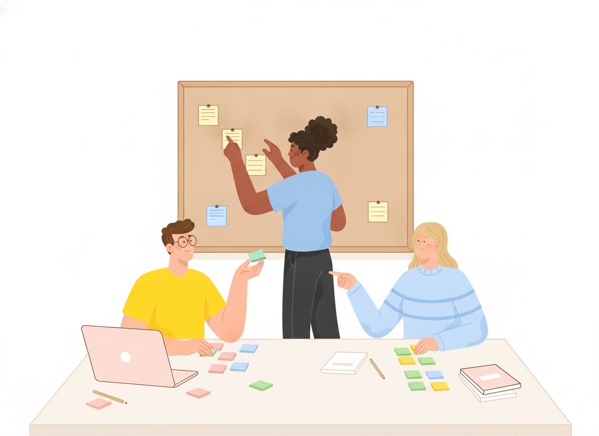

Company Wiki: How to Build One Your Team Actually Uses

Most teams don't lack knowledge. They lack a place to find it. The answer to "How do I get VPN access?" exists — in a chat thread from last spring, a shared drive folder, and the head of the one person who set it up.
A company wiki fixes that, if people actually use it. This guide covers what a company wiki is, what belongs in it, and how to build an internal wiki step by step so it becomes the first place people look, not the last.
What is a company wiki?
A company wiki is a shared, searchable set of pages where a team writes down how things work: processes, policies, how-to guides, and reference information. Anyone with access can read it, and the right people can edit it, so knowledge lives in one place instead of in inboxes and individual memories.
The name comes from the first wiki, WikiWikiWeb, which Ward Cunningham put online in 1995. "Wiki" is a Hawaiian word meaning "quick" — and quick is still the point. If finding an answer in your wiki is slower than asking a coworker, people will ask the coworker.
What belongs in an internal company wiki?
Start with the questions people ask most often. Typical sections include:
- Getting started — onboarding steps, accounts and tools, who to ask for what
- How-to guides — requesting access, setting up a laptop, submitting expenses
- Policies — security, remote work, time off, acceptable use
- Processes — how work moves between teams, approval steps, handoffs
- Team pages — what each team owns and how to work with them
- Reference — system lists, glossaries, contact lists, key dates
IT and operations teams often get the most from a wiki first, because they answer the same setup and access questions every week. Once those answers live in the wiki, every repeat question becomes a link instead of a conversation.
How to create an internal wiki, step by step
1. List the tasks people need help with
Before you create a single page, collect real questions. Look at support tickets, chat channels, and onboarding feedback. Write down each task in the words people actually use — "reset my password," not "credential lifecycle management."
This list becomes your content plan. Nielsen Norman Group's intranet usability research recommends building navigation around the tasks employees perform and the terms they use to describe those tasks. Your wiki should speak your team's language, not the language of whoever designed it.
2. Organize by task and topic, not by org chart
The most common wiki mistake is mirroring the org chart: one section per department. That forces readers to know who owns something before they can find it. Does the laptop policy live under IT, HR, or Finance?
Nielsen Norman Group found that intranets organized around tasks tended to hold up better through organizational change than those organized by department. Group content by what people are trying to do, like "Start here," "Tools and access," or "Time off and leave."
Keep the top level small. NN/g notes that too many top-level categories make it hard for people to choose, and that labels should be descriptive, specific, and mutually exclusive. If two sections could hold the same page, rename one.
3. Use a simple structure people can predict
Here's a company wiki example structure you can adapt:
- Start here — new-hire guide, how to use the wiki, who to ask
- Tools and access — accounts, devices, software, security basics
- How we work — processes, meetings, communication norms
- Policies — all current policies in one place
- Teams — one page per team: what they own, how to reach them
- Reference — glossary, system list, contacts
Six sections is a good starting point. Add depth inside sections rather than adding more top-level sections.
4. Pick a page type for every page
Mixed-purpose pages are hard to scan. The Diátaxis documentation framework separates content by what the reader needs, including how-to guides, reference, and explanation. A how-to guide gives directions toward a specific result, and nothing else.
For a company wiki, that translates into three basic page types:
- How-to pages — numbered steps for one task ("Request access to the finance drive")
- Reference pages — facts to look up ("List of approved software")
- Explanation pages — the why behind a decision ("Why we use single sign-on")
Link between them instead of mixing them. Our guide on how to write step-by-step instructions covers how-to pages in detail.
5. Create a company wiki template
A shared template keeps pages consistent and makes writing faster. A simple company wiki template for how-to pages:
- Purpose — one sentence on what this page helps you do
- Who it's for — the audience or role
- Before you start — access, tools, or approvals needed
- Steps — numbered, one action each
- Owner and last reviewed — who maintains this page and when it was last checked
A documentation style guide helps too, so headings, terms, and tone stay the same no matter who writes the page.
6. Make search and navigation work
People find wiki content two ways: by browsing and by searching. Support both.
- Keep the same navigation on every page, and show readers where they are, for example with breadcrumbs. NN/g notes that clear, persistent navigation helps users find information and see which areas they've already explored.
- Offer one search box that's always visible. NN/g's guidelines recommend a single, exposed search field that covers content from one central place.
- Write page titles the way people search: "How to set up email on your phone" beats "Mobile mail configuration."
7. Seed it before you launch it
An empty wiki teaches people not to come back. Before announcing it, write the pages behind your most common questions from step 1. Then launch with a short message: here's the wiki, here's what's in it, and here's how to suggest a page.
Company wiki best practices that keep it alive
Launching a wiki is the easy part. Keeping it trustworthy is the real work.
Give every page an owner
A page everyone owns is a page nobody updates. Show the owner on each page. NN/g's research found that some form of content oversight, whether centralized or shared between a central team and contributors, is needed to keep content high quality and findable. For more on setting this up, see our guide to documentation governance.
Answer with links
When someone asks a question in chat, reply with a link to the wiki page. If the page doesn't exist, write it, then send the link. This habit does more for adoption than any launch announcement.
Review on a schedule
Set review dates based on how fast things change. Access and tool pages may need checking every few months; policies might be reviewed yearly. Archive pages that are no longer true instead of leaving them to mislead readers.
Make feedback easy
Readers spot problems first. Give them a simple way to flag a broken step or an outdated page, and treat that feedback like a ticket. It's one of the simplest ways to build a knowledge-sharing culture.
Common company wiki mistakes
- Building structure before content. Start with real questions, not an empty tree of folders.
- Copying instead of linking. Two versions of the same page will drift apart. Keep one and link to it.
- Letting everything in. Meeting notes and drafts bury the pages people need. Keep the wiki for answers that stay true.
- No owner, no dates. Without them, readers can't tell what's current, and they stop trusting all of it.
Where Sonat fits
Sonat lets you build a company wiki without technical setup. Write in Google Docs or the built-in editor, organize pages into topics and menus, and keep internal content private with access control. Approval workflows help policy pages get the right sign-off, and every version is archived so you can see what changed. Full-text search gets people to answers fast, and readers can leave feedback on any page.
Conclusion
A company wiki works when it answers real questions faster than asking a person does. Start with the tasks people need help with, organize by task instead of by department, give each page a clear type and an owner, and answer questions with links. Do that consistently, and your wiki becomes the place where your team's knowledge lives, not the place it goes to be forgotten.